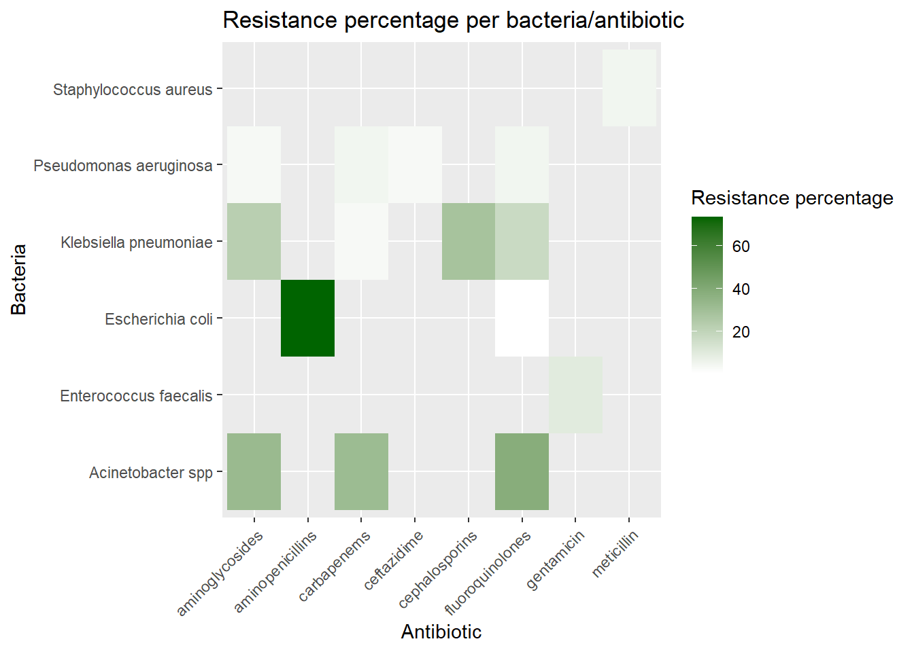
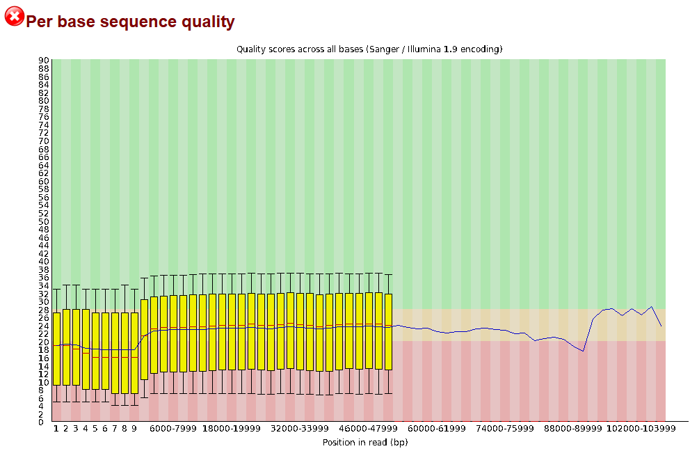
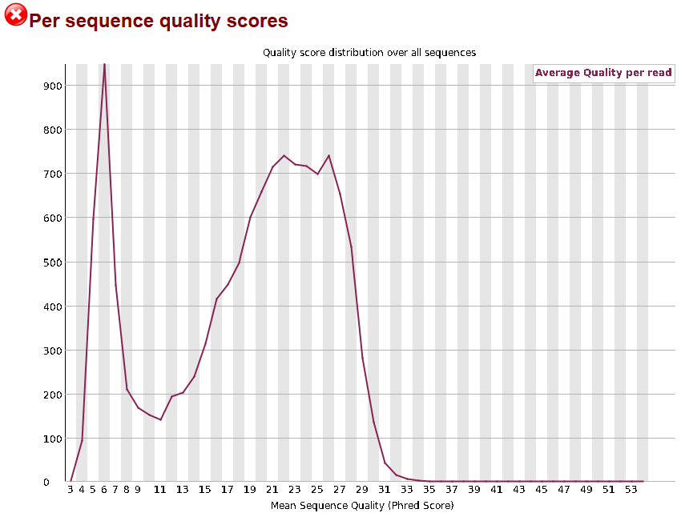
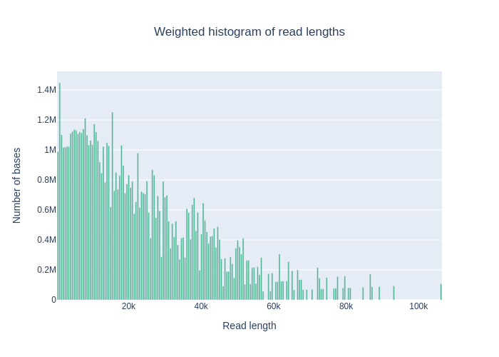
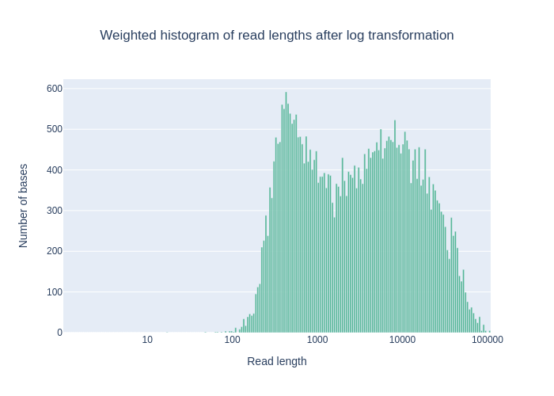
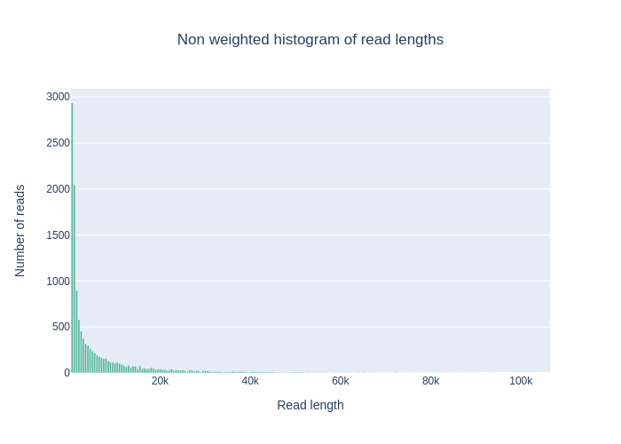
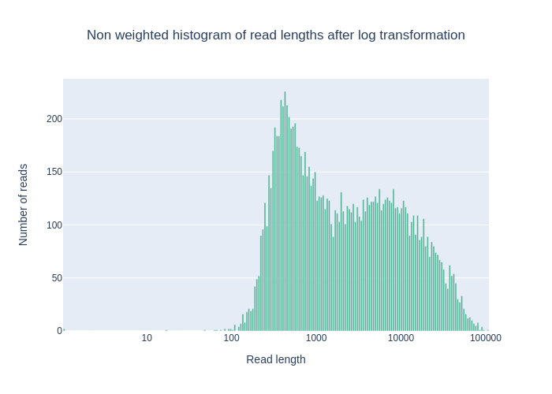
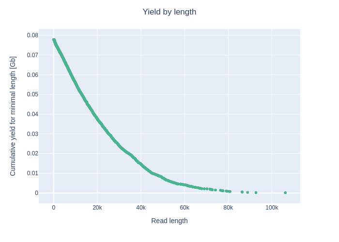
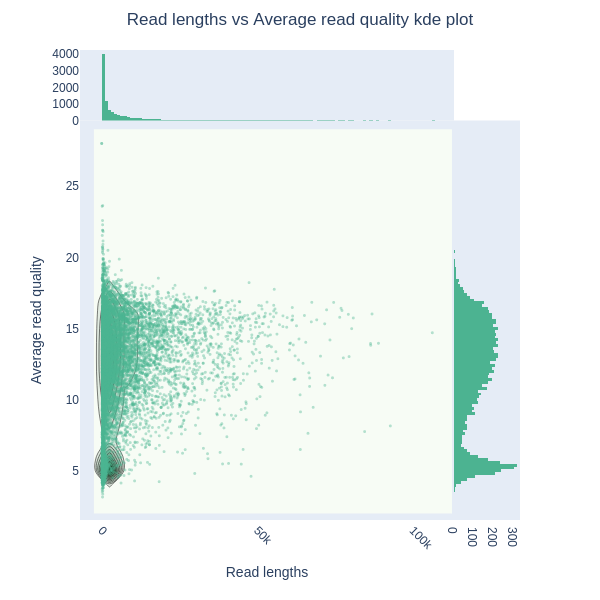
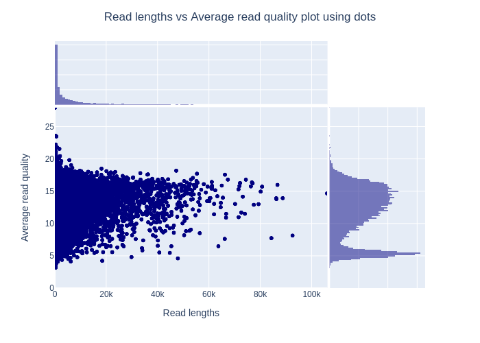

Identification of Antibiotic Resistance Genes in Bacteria
During my internship I am going to determine relatedness and resistance within bacteria using Oxford Nanopore whole genome sequencing. During the course Data Science for Biology 2 - Workflows, we got the opportunity to spend extra time developing a skill or make a head start on this that contributes to our future perspective. I chose to focus on the AMR package in R and the NanoPlot/NanoFilt packages from bioconda.
The AMR package in R was developed to enable standardized and reproducible AMR data analysis. To be able to learn how to work with this package, I followed the tutorial “How to conduct AMR data analysis” (“How to Conduct AMR Data Analysis” n.d.). After following the tutorial, I searched for a dataset that meets the requirements to work with this package. I used a dataset from the European Centre for Disease Prevention and Control. The dataset shows the occurrence and spread of antimicrobial (antibiotic) resistance in Europe in the years 2012-2015. The data was collected on the resistance to seven microorganisms: Escherichia coli, Klebsiella pneumoniae, Pseudomonas aeruginosa, Acinetobacter species, Streptococcus pneumoniae, Staphylococcus aureus, and Enterococci (“Antimicrobial Resistance Data” n.d.).
The NanoPlot package is a package that was specifically developed as a plotting suite for long-read sequencing data and alignments (Coster 2024b). The NanoFilt package is a package that was developed to filter and trim Oxford Nanopore sequencing data (Coster 2024a). To be able to work with the NanoPlot and NanoFilt packages, I used a different dataset. This dataset contained data from the study “Whole genome sequencing of antimicrobial resistant organisms from an Australian ICU.” The sample used was from the bacteria Klebsiella pneumoniae. The technique used was Oxford Nanopore MinION whole genome sequencing. The run I used from this experiment is “ERR10367339.” (“ERR10367339 : Run Browser : SRA Archive : NCBI” n.d.)
Below you can find the R code on how I applied the packages to the data.
AMR package in R
To work with the AMR package in R, you need a dataset that contains phenotypic antimicrobial susceptibility test results, organized around clinical isolates, with the data following standardized guidelines from organizations like EUCAST. The susceptibility result is a column where “S” means susceptible, “R” means resistant, and “I” means intermediate. This is determined by the resistance percentage (R) of isolates to a specific antibiotic, with “S” indicating low resistance (e.g., R < 30%), “R” indicating high resistance (e.g., R > 50%), and “I” indicating intermediate resistance (e.g., 30% ≤ R ≤ 50%). The exact guidelines weren’t available, but based on established practices, the resistance percentage (R) thresholds can be used to categorize the susceptibility results and be used to practice with the package.
Tidy data
After the dataset was selected and the susceptibility results were categorized, the data needed to be tidied. Below you can find the R code on how I did this.
# Define function for tidy data
tidy_data_function <- function(file_path, sheet_number, bacteria, antibioticum, row_range = "A4:M35") {
# Load raw data from the specified file, sheet, and range
raw_data <- read_excel(file_path, sheet = sheet_number, range = row_range)
# Print column names for inspection
print(colnames(raw_data))
# Rename columns to ensure unique and consistent names
colnames(raw_data) <- make.unique(c("Country", "N_2012", "R_2012", "CI_2012",
"N_2013", "R_2013", "CI_2013",
"N_2014", "R_2014", "CI_2014",
"N_2015", "R_2015", "CI_2015"))
# Process and clean the data
cleaned_data <- raw_data %>%
filter(Country != "EU/EEA (population-\r\nweighted mean)") %>%
mutate(across(starts_with("N_"), ~ as.numeric(replace(., . %in% c(".", ".-", ".-.", "**", "-", "(-)"), NA)))) %>%
mutate(across(starts_with("R_"), ~ {
value <- as.numeric(replace(., . %in% c(".", ".-", ".-.", "**", "-", "(-)"), NA))
value[grepl("^<", .)] <- as.numeric(gsub("<", "", .[grepl("^<", .)]))
return(value)
})) %>%
mutate(across(starts_with("CI_"), ~ gsub("\\(|\\)", "", .))) %>%
mutate(across(starts_with("CI_"), ~ replace(., . %in% c(".", ".-", ".-.", "**", "-", "(-)"), NA))) %>%
pivot_longer(
cols = matches("^N_|^CI_|^R_"),
names_to = c(".value", "year"),
names_pattern = "([A-Z]+)_(\\d+)"
) %>%
mutate(
bacteria = bacteria,
antibioticum = antibioticum,
SIR = case_when(
R > 50 ~ "R",
R >= 30 & R <= 50 ~ "I",
R < 30 ~ "S",
TRUE ~ NA_character_
)
)
return(cleaned_data)
}Tidy data per bacteria
After writing the function to tidy the data, the object could be defined for every bacteria.
Tidy data Escherichia coli
# Define the file path for the Excel file
file_path_e_coli <- here::here("data", "E_coli.xlsx")
# Define the bacteria name
bacteria_e_coli <- "Escherichia coli"
# Combine data from multiple sheet of the Excel files into a single dataset
e_coli <- bind_rows(
tidy_data_function(file_path = file_path_e_coli, sheet_number = 1,
bacteria = bacteria_e_coli,
antibioticum = "aminopenicillins"),
tidy_data_function(file_path = file_path_e_coli, sheet_number = 2,
bacteria = bacteria_e_coli,
antibioticum = "fluoroquinolones"),
tidy_data_function(file_path = file_path_e_coli, sheet_number = 3,
bacteria = bacteria_e_coli,
antibioticum = "cephalosporins"),
tidy_data_function(file_path = file_path_e_coli, sheet_number = 4,
bacteria = bacteria_e_coli,
antibioticum = "aminoglycosides"),
tidy_data_function(file_path = file_path_e_coli, sheet_number = 5,
bacteria = bacteria_e_coli,
antibioticum = "carbapenems"),
)## [1] "Country" "N...2" "%R...3" "(95% CI)...4" "N...5"
## [6] "%R...6" "(95% CI)...7" "N...8" "%R...9" "(95% CI)...10"
## [11] "N...11" "%R...12" "(95% CI)...13"## [1] "Country" "N...2" "%R...3" "(95% CI)...4" "N...5"
## [6] "%R...6" "(95% CI)...7" "N...8" "%R...9" "(95% CI)...10"
## [11] "N...11" "%R...12" "(95% CI)...13"## [1] "Country" "N...2" "%R...3" "(95% CI)...4" "N...5"
## [6] "%R...6" "(95% CI)...7" "N...8" "%R...9" "(95% CI)...10"
## [11] "N...11" "%R...12" "(95% CI)...13"## [1] "Country" "N...2" "%R...3" "(95% CI)...4" "N...5"
## [6] "%R...6" "(95% CI)...7" "N...8" "%R...9" "(95% CI)...10"
## [11] "N...11" "%R...12" "(95% CI)...13"## [1] "Country" "N...2" "%R...3" "(95% CI)...4" "N...5"
## [6] "%R...6" "(95% CI)...7" "N...8" "%R...9" "(95% CI)...10"
## [11] "N...11" "%R...12" "(95% CI)...13"## # A tibble: 600 × 8
## Country year N R CI bacteria antibioticum SIR
## <chr> <chr> <dbl> <dbl> <chr> <chr> <chr> <chr>
## 1 Sweden 2012 230 28.3 23-35 Escherichia coli aminopenicillins S
## 2 Sweden 2013 452 34.1 30-39 Escherichia coli aminopenicillins I
## 3 Sweden 2014 NA NA <NA> Escherichia coli aminopenicillins <NA>
## 4 Sweden 2015 396 34.1 29-39 Escherichia coli aminopenicillins I
## 5 Finland 2012 2090 39.7 38-42 Escherichia coli aminopenicillins I
## 6 Finland 2013 2124 37.3 35-39 Escherichia coli aminopenicillins I
## 7 Finland 2014 2365 34.7 33-37 Escherichia coli aminopenicillins I
## 8 Finland 2015 2472 36 34-38 Escherichia coli aminopenicillins I
## 9 Iceland 2012 131 44.3 36-53 Escherichia coli aminopenicillins I
## 10 Iceland 2013 121 46.3 37-56 Escherichia coli aminopenicillins I
## # ℹ 590 more rowsTidy data Klebsiella pneumoniae
# Define the file path for the Excel file
file_path_k_pneumoniae <- here::here("data", "K_pneumoniae.xlsx")
# Define the bacteria name
bacteria_k_pneumoniae <- "Klebsiella pneumoniae"
# Combine data from multiple sheet of the Excel files into a single dataset
k_pneumoniae <- bind_rows(
tidy_data_function(file_path = file_path_k_pneumoniae, sheet_number = 1,
bacteria = bacteria_k_pneumoniae,
antibioticum = "fluoroquinolones"),
tidy_data_function(file_path = file_path_k_pneumoniae, sheet_number = 2,
bacteria = bacteria_k_pneumoniae,
antibioticum = "cephalosporins"),
tidy_data_function(file_path = file_path_k_pneumoniae, sheet_number = 3,
bacteria = bacteria_k_pneumoniae,
antibioticum = "aminoglycosides"),
tidy_data_function(file_path = file_path_k_pneumoniae, sheet_number = 4,
bacteria = bacteria_k_pneumoniae,
antibioticum = "carbapenems")
)## [1] "Country" "N...2" "%R...3" "(95% CI)...4" "N...5"
## [6] "%R...6" "(95% CI)...7" "N...8" "%R...9" "(95% CI)...10"
## [11] "N...11" "%R...12" "(95% CI)...13"## [1] "Country" "N...2" "%R...3" "(95% CI)...4" "N...5"
## [6] "%R...6" "(95% CI)...7" "N...8" "%R...9" "(95% CI)...10"
## [11] "N...11" "%R...12" "(95% CI)...13"## [1] "Country" "N...2" "%R...3" "(95% CI)...4" "N...5"
## [6] "%R...6" "(95% CI)...7" "N...8" "%R...9" "(95% CI)...10"
## [11] "N...11" "%R...12" "(95% CI)...13"## [1] "Country" "N...2" "%R...3" "(95% CI)...4" "N...5"
## [6] "%R...6" "(95% CI)...7" "N...8" "%R...9" "(95% CI)...10"
## [11] "N...11" "%R...12" "(95% CI)...13"## # A tibble: 480 × 8
## Country year N R CI bacteria antibioticum SIR
## <chr> <chr> <dbl> <dbl> <chr> <chr> <chr> <chr>
## 1 Iceland 2012 14 7.1 0-34 Klebsiella pneumoniae fluoroquinolones S
## 2 Iceland 2013 28 0 0-12 Klebsiella pneumoniae fluoroquinolones S
## 3 Iceland 2014 28 3.6 0-18 Klebsiella pneumoniae fluoroquinolones S
## 4 Iceland 2015 35 2.9 0-15 Klebsiella pneumoniae fluoroquinolones S
## 5 Finland 2012 536 2.1 1-4 Klebsiella pneumoniae fluoroquinolones S
## 6 Finland 2013 537 2.6 1-4 Klebsiella pneumoniae fluoroquinolones S
## 7 Finland 2014 581 4.6 3-7 Klebsiella pneumoniae fluoroquinolones S
## 8 Finland 2015 658 3.3 2-5 Klebsiella pneumoniae fluoroquinolones S
## 9 Sweden 2012 977 3.7 3-5 Klebsiella pneumoniae fluoroquinolones S
## 10 Sweden 2013 1270 3.9 3-5 Klebsiella pneumoniae fluoroquinolones S
## # ℹ 470 more rowsTidy data Pseudomonas aeruginosa
# Define the file path for the Excel file
file_path_p_aeruginosa <- here::here("data", "P_aeruginosa.xlsx")
# Define the bacteria name
bacteria_p_aeruginosa <- "Pseudomonas aeruginosa"
# Combine data from multiple sheet of the Excel files into a single dataset
p_aeruginosa <- bind_rows(
tidy_data_function(file_path = file_path_p_aeruginosa, sheet_number = 2,
bacteria = bacteria_p_aeruginosa,
antibioticum = "fluoroquinolones",
row_range = "A5:M36"),
tidy_data_function(file_path = file_path_p_aeruginosa, sheet_number = 3,
bacteria = bacteria_p_aeruginosa,
antibioticum = "ceftazidime",
row_range = "A5:M36"),
tidy_data_function(file_path = file_path_p_aeruginosa, sheet_number = 4,
bacteria = bacteria_p_aeruginosa,
antibioticum = "aminoglycosides",
row_range = "A5:M36"),
tidy_data_function(file_path = file_path_p_aeruginosa, sheet_number = 5,
bacteria = bacteria_p_aeruginosa,
antibioticum = "carbapenems",
row_range = "A5:M36")
)## [1] "Country" "N...2" "%R...3" "(95% CI)...4" "N...5"
## [6] "%R...6" "(95% CI)...7" "N...8" "%R...9" "(95% CI)...10"
## [11] "N...11" "%R...12" "(95% CI)...13"## [1] "Country" "N...2" "%R...3" "(95% CI)...4" "N...5"
## [6] "%R...6" "(95% CI)...7" "N...8" "%R...9" "(95% CI)...10"
## [11] "N...11" "%R...12" "(95% CI)...13"
## [1] "Cyprus" "52" "15.4" "(7-28)" "47" "4.3" "(1-15)" "42" "9.5"
## [10] "(3-23)" "43" "0" "(0-8)"## [1] "Country" "N...2" "%R...3" "(95% CI)...4" "N...5"
## [6] "%R...6" "(95% CI)...7" "N...8" "%R...9" "(95% CI)...10"
## [11] "N...11" "%R...12" "(95% CI)...13"## # A tibble: 476 × 8
## Country year N R CI bacteria antibioticum SIR
## <chr> <chr> <dbl> <dbl> <chr> <chr> <chr> <chr>
## 1 Estonia 2012 32 15.6 5-33 Pseudomonas aeruginosa fluoroquinolones S
## 2 Estonia 2013 20 25 9-49 Pseudomonas aeruginosa fluoroquinolones S
## 3 Estonia 2014 39 10.3 3-24 Pseudomonas aeruginosa fluoroquinolones S
## 4 Estonia 2015 18 0 0-19 Pseudomonas aeruginosa fluoroquinolones S
## 5 Sweden 2012 357 6.7 4-10 Pseudomonas aeruginosa fluoroquinolones S
## 6 Sweden 2013 531 6 4-8 Pseudomonas aeruginosa fluoroquinolones S
## 7 Sweden 2014 338 7.7 5-11 Pseudomonas aeruginosa fluoroquinolones S
## 8 Sweden 2015 382 4.7 3-7 Pseudomonas aeruginosa fluoroquinolones S
## 9 Denmark 2012 389 4.1 2-7 Pseudomonas aeruginosa fluoroquinolones S
## 10 Denmark 2013 408 3.2 2-5 Pseudomonas aeruginosa fluoroquinolones S
## # ℹ 466 more rowsTidy data Acinetobacter spp.
# Define the file path for the Excel file
file_path_acinetobacter_spp <- here::here("data", "Acinetobacter_spp.xlsx")
# Define the bacteria name
bacteria_acinetobacter_spp <- "Acinetobacter spp"
# Combine data from multiple sheet of the Excel files into a single dataset
acinetobacter_spp <- bind_rows(
tidy_data_function(file_path = file_path_acinetobacter_spp, sheet_number = 1,
bacteria = bacteria_acinetobacter_spp,
antibioticum = "fluoroquinolones",
row_range = "A4:M34"),
tidy_data_function(file_path = file_path_acinetobacter_spp, sheet_number = 2,
bacteria = bacteria_acinetobacter_spp,
antibioticum = "aminoglycosides",
row_range = "A4:M34"),
tidy_data_function(file_path = file_path_acinetobacter_spp, sheet_number = 3,
bacteria = bacteria_acinetobacter_spp,
antibioticum = "carbapenems",
row_range = "A4:M34")
)## [1] "Country" "N...2" "%R...3" "(95% CI)...4" "N...5"
## [6] "%R...6" "(95% CI)...7" "N...8" "%R...9" "(95% CI)...10"
## [11] "N...11" "%R...12" "(95% CI)...13"## [1] "Country" "N...2" "%R...3" "(95% CI)...4" "N...5"
## [6] "%R...6" "(95% CI)...7" "N...8" "%R...9" "(95% CI)...10"
## [11] "N...11" "%R...12" "(95% CI)...13"## [1] "Country" "N...2" "%R...3" "(95% CI)...4" "N...5"
## [6] "%R...6" "(95% CI)...7" "N...8" "%R...9" "(95% CI)...10"
## [11] "N...11" "%R...12" "(95% CI)...13"## # A tibble: 360 × 8
## Country year N R CI bacteria antibioticum SIR
## <chr> <chr> <dbl> <dbl> <chr> <chr> <chr> <chr>
## 1 Belgium 2012 NA NA <NA> Acinetobacter spp fluoroquinolones <NA>
## 2 Belgium 2013 3 NA <NA> Acinetobacter spp fluoroquinolones <NA>
## 3 Belgium 2014 4 NA <NA> Acinetobacter spp fluoroquinolones <NA>
## 4 Belgium 2015 26 0 0-13 Acinetobacter spp fluoroquinolones S
## 5 Finland 2012 NA NA <NA> Acinetobacter spp fluoroquinolones <NA>
## 6 Finland 2013 36 2.8 0-15 Acinetobacter spp fluoroquinolones S
## 7 Finland 2014 31 6.5 1-21 Acinetobacter spp fluoroquinolones S
## 8 Finland 2015 43 2.3 0-12 Acinetobacter spp fluoroquinolones S
## 9 Sweden 2012 NA NA <NA> Acinetobacter spp fluoroquinolones <NA>
## 10 Sweden 2013 74 5.4 1-13 Acinetobacter spp fluoroquinolones S
## # ℹ 350 more rowsTidy data Streptococcus pneumoniae
# Define the file path for the Excel file
file_path_s_pneumoniae <- here::here("data", "S_pneumoniae.xlsx")
# Define the bacteria name
bacteria_s_pneumoniae <- "Streptococcus pneumoniae"
# Combine data from multiple sheet of the Excel files into a single dataset
s_pneumoniae <- bind_rows(
tidy_data_function(file_path = file_path_s_pneumoniae, sheet_number = 1,
bacteria = bacteria_s_pneumoniae,
antibioticum = "penicillin",
row_range = "A4:M33"),
tidy_data_function(file_path = file_path_s_pneumoniae, sheet_number = 2,
bacteria = bacteria_s_pneumoniae,
antibioticum = "macrolides",
row_range = "A4:M33")
)## [1] "Country" "N...2" "%R...3" "(95% CI)...4" "N...5"
## [6] "%R...6" "(95% CI)...7" "N...8" "%R...9" "(95% CI)...10"
## [11] "N...11" "%R...12" "(95% CI)...13"## [1] "Country" "N...2" "%R...3" "(95% CI)...4" "N...5"
## [6] "%R...6" "(95% CI)...7" "N...8" "%R...9" "(95% CI)...10"
## [11] "N...11" "%R...12" "(95% CI)...13"## # A tibble: 232 × 8
## Country year N R CI bacteria antibioticum SIR
## <chr> <chr> <dbl> <dbl> <chr> <chr> <chr> <chr>
## 1 Belgium 2012 1658 1.5 1-2 Streptococcus pneumoniae penicillin S
## 2 Belgium 2013 1536 1.7 1-2 Streptococcus pneumoniae penicillin S
## 3 Belgium 2014 1110 1.3 1-2 Streptococcus pneumoniae penicillin S
## 4 Belgium 2015 1361 0.6 1-2 Streptococcus pneumoniae penicillin S
## 5 Netherlands 2012 1063 1.5 1-2 Streptococcus pneumoniae penicillin S
## 6 Netherlands 2013 1032 1.1 1-2 Streptococcus pneumoniae penicillin S
## 7 Netherlands 2014 1139 2.1 1-3 Streptococcus pneumoniae penicillin S
## 8 Netherlands 2015 1163 1.8 1-2 Streptococcus pneumoniae penicillin S
## 9 Estonia 2012 53 0 0-7 Streptococcus pneumoniae penicillin S
## 10 Estonia 2013 78 1.3 0-7 Streptococcus pneumoniae penicillin S
## # ℹ 222 more rowsTidy data Staphylococcus aureus
# Define the file path for the Excel file
file_path_s_aureus <- here::here("data", "S_aureus.xlsx")
# Define the bacteria name
bacteria_s_aureus <- "Staphylococcus aureus"
# Combine data from multiple sheet of the Excel files into a single dataset
s_aureus <- bind_rows(
tidy_data_function(file_path = file_path_s_aureus, sheet_number = 1,
bacteria = bacteria_s_aureus,
antibioticum = "meticillin")
)## [1] "Country" "N...2" "%R...3" "(95% CI)...4" "N...5"
## [6] "%R...6" "(95% CI)...7" "N...8" "%R...9" "(95% CI)...10"
## [11] "N...11" "%R...12" "(95% CI)...13"## # A tibble: 120 × 8
## Country year N R CI bacteria antibioticum SIR
## <chr> <chr> <dbl> <dbl> <chr> <chr> <chr> <chr>
## 1 Iceland 2012 58 1.7 0-9 Staphylococcus aureus meticillin S
## 2 Iceland 2013 69 0 0-5 Staphylococcus aureus meticillin S
## 3 Iceland 2014 61 3.3 0-11 Staphylococcus aureus meticillin S
## 4 Iceland 2015 88 0 0-4 Staphylococcus aureus meticillin S
## 5 Sweden 2012 3263 0.7 0-1 Staphylococcus aureus meticillin S
## 6 Sweden 2013 4099 1 1-1 Staphylococcus aureus meticillin S
## 7 Sweden 2014 2745 1 1-1 Staphylococcus aureus meticillin S
## 8 Sweden 2015 3124 0.8 1-1 Staphylococcus aureus meticillin S
## 9 Norway 2012 1430 1.3 1-2 Staphylococcus aureus meticillin S
## 10 Norway 2013 1473 0.7 0-1 Staphylococcus aureus meticillin S
## # ℹ 110 more rowsTidy data Enterococcus faecalis
# Define the file path for the Excel file
file_path_e_faecalis <- here::here("data", "E_faecalis.xlsx")
# Define the bacteria name
bacteria_e_faecalis <- "Enterococcus faecalis"
# Combine data from multiple sheet of the Excel files into a single dataset
e_faecalis <- bind_rows(
tidy_data_function(file_path = file_path_e_faecalis, sheet_number = 1,
bacteria = bacteria_e_faecalis,
antibioticum = "gentamicin"),
tidy_data_function(file_path = file_path_e_faecalis, sheet_number = 2,
bacteria = bacteria_e_faecalis,
antibioticum = "vancomycin")
)## [1] "Country" "N...2" "%R...3" "(95% CI)...4" "N...5"
## [6] "%R...6" "(95% CI)...7" "N...8" "%R...9" "(95% CI)...10"
## [11] "N...11" "%R...12" "(95% CI)...13"## [1] "Country" "N...2" "%R...3" "(95% CI)...4" "N...5"
## [6] "%R...6" "(95% CI)...7" "N...8" "%R...9" "(95% CI)...10"
## [11] "N...11" "%R...12" "(95% CI)...13"## # A tibble: 240 × 8
## Country year N R CI bacteria antibioticum SIR
## <chr> <chr> <dbl> <dbl> <chr> <chr> <chr> <chr>
## 1 Cyprus 2012 77 10.4 5-19 Enterococcus faecalis gentamicin S
## 2 Cyprus 2013 67 26.9 17-39 Enterococcus faecalis gentamicin S
## 3 Cyprus 2014 80 17.5 10-28 Enterococcus faecalis gentamicin S
## 4 Cyprus 2015 58 8.6 3-19 Enterococcus faecalis gentamicin S
## 5 Norway 2012 123 30.1 22-39 Enterococcus faecalis gentamicin I
## 6 Norway 2013 168 26.8 20-34 Enterococcus faecalis gentamicin S
## 7 Norway 2014 270 20.7 16-26 Enterococcus faecalis gentamicin S
## 8 Norway 2015 163 9.8 6-15 Enterococcus faecalis gentamicin S
## 9 France 2012 1528 16.7 15-19 Enterococcus faecalis gentamicin S
## 10 France 2013 1639 14.7 13-17 Enterococcus faecalis gentamicin S
## # ℹ 230 more rowsCombined tidy data of every bacteria
Combine the datasets of every bacteria.
# Combine the datasets of every bacteria
combined_data <- bind_rows(
e_coli,
k_pneumoniae,
p_aeruginosa,
acinetobacter_spp,
s_pneumoniae,
s_aureus,
e_faecalis
)
# View the combined dataset
print(combined_data)## # A tibble: 2,508 × 8
## Country year N R CI bacteria antibioticum SIR
## <chr> <chr> <dbl> <dbl> <chr> <chr> <chr> <chr>
## 1 Sweden 2012 230 28.3 23-35 Escherichia coli aminopenicillins S
## 2 Sweden 2013 452 34.1 30-39 Escherichia coli aminopenicillins I
## 3 Sweden 2014 NA NA <NA> Escherichia coli aminopenicillins <NA>
## 4 Sweden 2015 396 34.1 29-39 Escherichia coli aminopenicillins I
## 5 Finland 2012 2090 39.7 38-42 Escherichia coli aminopenicillins I
## 6 Finland 2013 2124 37.3 35-39 Escherichia coli aminopenicillins I
## 7 Finland 2014 2365 34.7 33-37 Escherichia coli aminopenicillins I
## 8 Finland 2015 2472 36 34-38 Escherichia coli aminopenicillins I
## 9 Iceland 2012 131 44.3 36-53 Escherichia coli aminopenicillins I
## 10 Iceland 2013 121 46.3 37-56 Escherichia coli aminopenicillins I
## # ℹ 2,498 more rowsWide data for AMR package functions
To be able to analyze the data with the AMR package, the data needs to be in a wide format.
# Define the function to create a wide format
create_wide_format <- function(data) {
data %>%
distinct(Country, year, bacteria, antibioticum, .keep_all = TRUE) %>%
pivot_wider(
names_from = antibioticum, # Pivot antibiotics into columns
values_from = SIR, # Fill columns with SIR values
values_fill = list(SIR = NA) # Fill missing SIR values with NA
)
}
wide_data <- create_wide_format(combined_data)
print(wide_data)## # A tibble: 2,411 × 17
## Country year N R CI bacteria aminopenicillins fluoroquinolones
## <chr> <chr> <dbl> <dbl> <chr> <chr> <chr> <chr>
## 1 Sweden 2012 230 28.3 23-35 Escherichia coli S <NA>
## 2 Sweden 2013 452 34.1 30-39 Escherichia coli I <NA>
## 3 Sweden 2014 NA NA <NA> Escherichia coli <NA> <NA>
## 4 Sweden 2015 396 34.1 29-39 Escherichia coli I <NA>
## 5 Finland 2012 2090 39.7 38-42 Escherichia coli I <NA>
## 6 Finland 2013 2124 37.3 35-39 Escherichia coli I <NA>
## 7 Finland 2014 2365 34.7 33-37 Escherichia coli I <NA>
## 8 Finland 2015 2472 36 34-38 Escherichia coli I <NA>
## 9 Iceland 2012 131 44.3 36-53 Escherichia coli I <NA>
## 10 Iceland 2013 121 46.3 37-56 Escherichia coli I <NA>
## # ℹ 2,401 more rows
## # ℹ 9 more variables: cephalosporins <chr>, aminoglycosides <chr>, carbapenems <chr>,
## # ceftazidime <chr>, penicillin <chr>, macrolides <chr>, meticillin <chr>,
## # gentamicin <chr>, vancomycin <chr>wide_data$bacteria <- as.mo(wide_data$bacteria, info = TRUE)
wide_data <- wide_data %>%
mutate_if(is_sir_eligible, as.sir)
wide_data## # A tibble: 2,411 × 17
## Country year N R CI bacteria aminopenicillins fluoroquinolones
## <chr> <chr> <dbl> <dbl> <chr> <mo> <sir> <sir>
## 1 Sweden 2012 230 28.3 23-35 B_ESCHR_COLI S NA
## 2 Sweden 2013 452 34.1 30-39 B_ESCHR_COLI I NA
## 3 Sweden 2014 NA NA <NA> B_ESCHR_COLI NA NA
## 4 Sweden 2015 396 34.1 29-39 B_ESCHR_COLI I NA
## 5 Finland 2012 2090 39.7 38-42 B_ESCHR_COLI I NA
## 6 Finland 2013 2124 37.3 35-39 B_ESCHR_COLI I NA
## 7 Finland 2014 2365 34.7 33-37 B_ESCHR_COLI I NA
## 8 Finland 2015 2472 36 34-38 B_ESCHR_COLI I NA
## 9 Iceland 2012 131 44.3 36-53 B_ESCHR_COLI I NA
## 10 Iceland 2013 121 46.3 37-56 B_ESCHR_COLI I NA
## # ℹ 2,401 more rows
## # ℹ 9 more variables: cephalosporins <sir>, aminoglycosides <sir>, carbapenems <sir>,
## # ceftazidime <sir>, penicillin <sir>, macrolides <sir>, meticillin <sir>,
## # gentamicin <sir>, vancomycin <sir>## Country year N R
## Length:2411 Length:2411 Min. : 1.0 Min. : 0.00
## Class :character Class :character 1st Qu.: 132.0 1st Qu.: 5.80
## Mode :character Mode :character Median : 390.5 Median :15.05
## Mean : 1020.6 Mean :22.35
## 3rd Qu.: 1041.5 3rd Qu.:32.60
## Max. :11055.0 Max. :95.30
## NA's :25 NA's :53
## CI bacteria aminopenicillins fluoroquinolones
## Length:2411 Class :mo Class:sir Class:sir
## Class :character <NA> :0 %R :73.9% (n=88) %R :16.4% (n=74)
## Mode :character Unique:7 %SI :26.1% (n=31) %SI :83.6% (n=377)
## #1 :B_ESCHR_COLI - %S : 0.8% (n=1) - %S :64.3% (n=290)
## #2 :B_KLBSL_PNMN - %I :25.2% (n=30) - %I :19.3% (n=87)
## #3 :B_PSDMN_AERG
##
## cephalosporins aminoglycosides carbapenems ceftazidime
## Class:sir Class:sir Class:sir Class:sir
## %R :14.2% (n=34) %R :15.7% (n=70) %R :10.6% (n=48) %R : 3.3% (n=4)
## %SI :85.8% (n=206) %SI :84.3% (n=377) %SI :89.4% (n=403) %SI :96.7% (n=116)
## - %S :72.9% (n=175) - %S :74.7% (n=334) - %S :83.4% (n=376) - %S :91.7% (n=110)
## - %I :12.9% (n=31) - %I : 9.6% (n=43) - %I : 6.0% (n=27) - %I : 5.0% (n=6)
##
##
## penicillin macrolides meticillin gentamicin
## Class:sir Class:sir Class:sir Class:sir
## %R : 0.0% (n=0) %R : 0.0% (n=0) %R : 5.0% (n=6) %R :10.6% (n=12)
## %SI :100.0% (n=113) %SI :100.0% (n=112) %SI :95.0% (n=114) %SI :89.4% (n=101)
## - %S :92.0% (n=104) - %S :89.3% (n=100) - %S :80.0% (n=96) - %S :39.8% (n=45)
## - %I : 8.0% (n=9) - %I :10.7% (n=12) - %I :15.0% (n=18) - %I :49.6% (n=56)
##
##
## vancomycin
## Class:sir
## %R : 0.0% (n=0)
## %SI :100.0% (n=118)
## - %S :95.8% (n=113)
## - %I : 4.2% (n=5)
##
## ## Country year N R CI
## 31 4 1200 663 982
## bacteria aminopenicillins fluoroquinolones cephalosporins aminoglycosides
## 7 4 4 4 4
## carbapenems ceftazidime penicillin macrolides meticillin
## 4 4 3 3 4
## gentamicin vancomycin
## 4 3## # A tibble: 7 × 2
## `mo_name(bacteria)` n
## <chr> <int>
## 1 Escherichia coli 599
## 2 Klebsiella pneumoniae 470
## 3 Pseudomonas aeruginosa 456
## 4 Acinetobacter 296
## 5 Enterococcus faecalis 240
## 6 Streptococcus pneumoniae 230
## 7 Staphylococcus aureus 120## # A tibble: 12 × 17
## Country year N R CI bacteria aminopenicillins fluoroquinolones
## <chr> <chr> <dbl> <dbl> <chr> <mo> <sir> <sir>
## 1 Latvia 2013 54 61.1 47-74 B_ENTRC_FCLS NA NA
## 2 Lithuania 2012 59 50.8 37-64 B_ENTRC_FCLS NA NA
## 3 Lithuania 2013 44 54.5 39-70 B_ENTRC_FCLS NA NA
## 4 Hungary 2012 452 56.2 51-61 B_ENTRC_FCLS NA NA
## 5 Hungary 2013 602 51.7 48-56 B_ENTRC_FCLS NA NA
## 6 Italy 2012 301 50.8 45-57 B_ENTRC_FCLS NA NA
## 7 Italy 2014 516 55.2 51-60 B_ENTRC_FCLS NA NA
## 8 Slovak Republic 2012 179 50.3 43-58 B_ENTRC_FCLS NA NA
## 9 Slovak Republic 2013 209 57.4 50-64 B_ENTRC_FCLS NA NA
## 10 Romania 2012 51 56.9 42-71 B_ENTRC_FCLS NA NA
## 11 Romania 2013 80 58.8 47-70 B_ENTRC_FCLS NA NA
## 12 Romania 2014 34 76.5 59-89 B_ENTRC_FCLS NA NA
## # ℹ 9 more variables: cephalosporins <sir>, aminoglycosides <sir>, carbapenems <sir>,
## # ceftazidime <sir>, penicillin <sir>, macrolides <sir>, meticillin <sir>,
## # gentamicin <sir>, vancomycin <sir>Antibiogram
To be able to make an antibiogram, first the resistance percentage was calculated from the combined data.
# Calculate the resistance percentage
resistance_analysis <- combined_data %>%
filter(SIR == "R") %>%
group_by(bacteria, antibioticum) %>%
summarise(R_count = n(), .groups = 'drop') %>%
left_join(
combined_data %>%
group_by(bacteria, antibioticum) %>%
summarise(total_count = n(), .groups = 'drop'),
by = c("bacteria", "antibioticum")
) %>%
mutate(resistance_percentage = (R_count / total_count) * 100)
# Create an antibiogram
antibiogram <- resistance_analysis %>%
dplyr::select(bacteria, antibioticum, resistance_percentage) %>%
pivot_wider(
names_from = antibioticum,
values_from = resistance_percentage,
values_fill = 0
)
# View the antibiogram
print(antibiogram)## # A tibble: 6 × 9
## bacteria aminoglycosides carbapenems fluoroquinolones gentamicin aminopenicillins
## <chr> <dbl> <dbl> <dbl> <dbl> <dbl>
## 1 Acinetobacter s… 32.5 31.7 38.3 0 0
## 2 Enterococcus fa… 0 0 0 10 0
## 3 Escherichia coli 0 0 0.833 0 73.3
## 4 Klebsiella pneu… 22.5 3.33 17.5 0 0
## 5 Pseudomonas aer… 3.45 5 5 0 0
## 6 Staphylococcus … 0 0 0 0 0
## # ℹ 3 more variables: cephalosporins <dbl>, ceftazidime <dbl>, meticillin <dbl># Plot resistance analysis
ggplot(resistance_analysis, aes(x = antibioticum, y = bacteria, fill = resistance_percentage)) +
geom_tile() +
scale_fill_gradient(low = "white", high = "darkgreen") +
theme(axis.text.x = element_text(angle = 45, hjust = 1)) +
labs(title = "Resistance percentage per bacteria/antibiotic",
x = "Antibiotic", y = "Bacteria", fill = "Resistance percentage")
Figure 1. Resistance percentage per bacteria and antibiotic.
Quality control with NanoPlot and NanoFilt
The quality control of the ERR10367339 dataset was done on a server and not in this bookdown locally. This was done because the server has more computational power which made it easier to work with this data. Below you can find the code I executed and the results.
# Create a new conda environment
conda create --name amr_analysis
# Activate the newly created conda environment
conda activate amr_analysis
# Install the SRA tolls from bioconda
conda install -c bioconda sra-tools
# Prefetch the SRA file
prefetch ERR10367339
# Convert the downloaded SRA file to fastq format
fastq-dump --split-files --outdir "./data" "./data/ERR10367339.sra"
# Run fastqc on the fastq file to assess the quality of the sequencing data
fastqc ERR10367339
# Install NanoPlot
pip install NanoPlot
# List available color options and color maps for NanoPlot
NanoPlot --listcolors
NanoPlot --listcolormaps
# Generate kde plots
NanoPlot --fastq ERR10367339.fastq --plots kde -o plots_kde
# Generate dot plots with navy color
NanoPlot --fastq ERR10367339.fastq --plots dot -o plots_dot -c navy
# Generate quality control results of the fastq file
# When using this, the different kde and dot plots will be generated
NanoPlot --fastq ERR10367339.fastq -o QC_Results
# Install NanoFilt
pip install nanofilt
# Filter the fastq files to retain reads with a quality score of 10 or higher
cat ERR10367339.fastq | NanoFilt -q 10 > filtered_reads.fastqBelow you can find part of the FastQC Report.
FastQC Report: per base sequence quality

Figure 2. Per base sequence quality.
Figure 2 shows that the average quality of the sequences is good with scores in the green area (indicative of high quality). When the bases get further into the sequence, the quality decreases, which shows a lower quality. This pattern is typical for sequence data because the quality decreases with longer read lengths. The fluctuations and broader interquartile ranges in the later bases indicate inconsistent and potentially unreliable data in those regions.
FastQC Report: per sequence quality scores

Figure 3. Per sequence quality scores.
Figure 3 shows a high peak with low-quality scores at around a Phred score of 7-10, which shows that a large amount of sequences has a low quality. The second peak at higher quality scores around a Phred score of 22-30 shows that there is a subset of sequences with a better, acceptable quality. This distribution could possibly be a technical problem.
Below you can the NanoPlot output. The full NanoPlot report is available on my github page under “data/NanoPlot-report.html”.
NanoPlot: Weighted histogram of read lengths

Figure 4. Weighted histogram of reads length.
Figure 4 shows the weighted histogram of read lengths. The distribution of read lengths shows that there is a high frequency of short reads, with a decrease when the read length increases. Most reads are shorter than 20k, while the longer reads (80-100k) are significantly less frequent.
NanoPlot: Weighted histogram of read lengths after log transformation

Figure 5. Weighted histogram of reads length after log transformation.
Figure 5 shows the weighted histogram of read lengths after log transformation. After log transformation, the distribution of read lengths is more even. This indicates that the distribution is log-normal. This pattern is typical for sequencing data, where a wide range of lengths occurs, but most values concentrate around a specific range.
NanoPlot: Non weighted histogram of read lengths

Figure 6. Non weighted histogram of reads length.
Figure 6 shows the non-weighted histogram of reads length. The majority of the reads are short, under 20k, with a distinct peak around the shortest reads. The frequency decreases when the read lengths increase. This results in a strongly right-skewed distribution.
NanoPlot: Non weighted histogram of read lengths after log transformation

Figure 7. Non weighted histogram of reads length after log transformation.
Figure 7 shows the non-weighted histogram of reads length after log transformation. This results in a more evenly distributed plot than figure 5. This gives a better insight into the distribution of the read lengths across different scales. The majority of the reads are between 100 and 10,000 (after log transformation), with a peak around a few hundred base pairs. The tail of the distribution shows that longer reads are less frequent but still present.
NanoPlot: Yield by length

Figure 8. Yield by length.
Figure 8 shows the yield by length. The cumulative yield shows that the majority of the total sequence data is provided by shorter reads. Beyond approximately 40k, further lengthening of the reads contributes only minimally to the total yield.
Nanoplot: Read lengths vs Average read quality kde plot

Figure 9. Read lengths vs Average read quality kde plot.
Figure 9 shows the read length vs. average read length generated with kernel density estimation. The plot shows that there is a high concentration of short reads with an average read length between 10-15. The distribution of long reads shows a lower density, which suggests that long reads have a lower and less consistent quality.
NanoPlot: Read lengths vs Average read quality using dots

Figure 10. Read lengths vs Average read quality using dots.
Figure 10 shows the read length vs. average read length generated with data points (dots). As the read lengths increase, the data points become more sparsely distributed, indicating that longer reads occur less frequently. The average read quality stays under 20 and varies less for longer reads.
References
Antimicrobial Resistance data analysis. (z.d.). https://msberends.github.io/AMR/
Bioinformatics for Beginners. (2023, 22 juni). Quality Control of Long Reads Data using NanoPlot and FiltLong [Video]. YouTube. https://www.youtube.com/watch?v=Zf0xX2CqkLw
De Coster, W., D’Hert, S., Schultz, D. T., Cruts, M., & Van Broeckhoven, C. (2018). NanoPack: visualizing and processing long-read sequencing data. Bioinformatics, 34(15), 2666–2669. https://doi.org/10.1093/bioinformatics/bty149
Embl-Ebi. (z.d.). ENA Browser. https://www.ebi.ac.uk/ena/browser/home
Galaxy Training Network. (2024, 13 maart). Assembly / Genome Assembly of MRSA from Oxford Nanopore MinION data (and optionally Illumina data) / Hands-on: Genome Assembly of MRSA from Oxford Nanopore MinION data (and optionally Illumina data). https://training.galaxyproject.org/training-material/topics/assembly/tutorials/mrsa-nanopore/tutorial.html#assembly
Home - SRA - NCBI. (z.d.). https://www.ncbi.nlm.nih.gov/sra
NanoFilt | Anaconda.org. (z.d.). https://anaconda.org/bioconda/nanofilt
Nanoplot | Anaconda.org. (z.d.). https://anaconda.org/bioconda/nanoplot